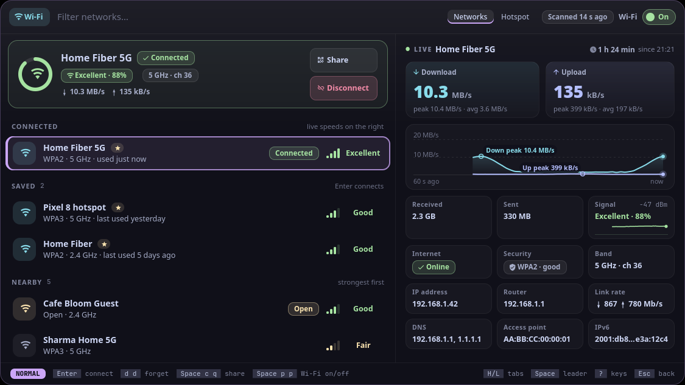
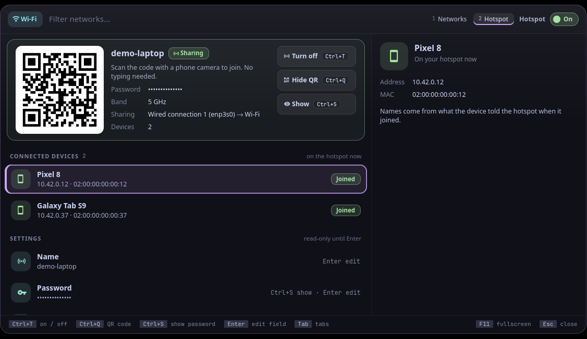

Tarang (तरंग) is Sanskrit for "wave": the radio waves your Wi‑Fi and hotspot ride on.
tarang is wi‑Fi and the hotspot for Vyom: one keyboard-driven panel that opens instantly, with live data, a preview and a key for everything. It runs on any compositor with the layer-shell protocol (sway, Hyprland, river, niri, Wayfire, labwc…). In Vayu, the desktop it was built for, it replaces networkmanager_dmenu (wifi-picker.py).
#Features
- The network you're on, at a glance: a card at the top with a signal ring, link speed, band and channel, security and your address, and its Share (
Ctrl+Q) and Disconnect (Ctrl+D) buttons. Not connected, it says why: Wi‑Fi off, on Ethernet, NetworkManager not running, no Wi‑Fi card. - Signal as bars and a word (Excellent, Good, Fair, Weak in green, green, yellow, red), saved networks starred, then nearby ones, strongest first. Open networks get a yellow Open chip, WEP/WPA1 a red one. Scanning shows in the top bar ("Scanning…", then "Scanned 8 s ago");
Ctrl+Rrescans. Enterconnects; a secured network you haven't joined asks for its password right in the search box (hidden;Ctrl+Sshows it), and nothing is sent until you pressEnter.- Connecting shows its steps (Associating, Authenticating, Getting an address), read from NetworkManager as they happen. When it fails it says why in red: wrong password (and asks again), out of range, no address from the router, a network that needs a user name (WPA Enterprise), a password that's too short.
- The preview: a signal meter with what it means in plain words ("Fine for video calls"), security as a chip (WPA3 strong, WPA2 good, Open with a warning that anyone nearby can read unencrypted traffic), band and channel, speed, metered, BSSID, and Forget in red: press
Ctrl+Ftwice, since it can't be undone. - Share (
Ctrl+Q): a QR code phones scan to join the network you're on (needs qrencode; without it, the password is shown instead). Only when you ask; the password stays hidden untilCtrl+S. - A Hotspot tab (with Vayu's
vayu-hotspot, or any command with itsstatus --json/on/offinterface): a QR code to join, the name, the password (hidden untilCtrl+S), the band and what it shares, the devices connected right now, andCtrl+T(or the switch) to turn it on or off. Name, password and band are settings, read-only until you pressEnteron one. - A Wi‑Fi on/off switch in the top bar (
Ctrl+W); on the Hotspot tab it's the hotspot's. - Keyboard first: every action has a key, shown on its button and in the footer; the mouse works too.
- Never freezes the panel: slow commands run in the background.
#Install
#Requirements
- Vyom 0.6 or newer (Python 3.11+, PyGObject, GTK 4, gtk4-layer-shell, a Nerd Font)
nmcli- optional: qrencode (QR codes to share a network or join the hotspot)
#Install
git clone https://github.com/Theyashsawarkar/tarang ~/.local/share/vyom/plugins/tarang
vyom reload # pick it up (or log out and in)
vyom tarang # open it; run it again to closeGive it a key in your compositor, e.g. sway:
bindsym $mod+<key> exec vyom tarang#Update and uninstall
git -C ~/.local/share/vyom/plugins/tarang pull && vyom reload # update
rm -rf ~/.local/share/vyom/plugins/tarang && vyom reload # uninstall#Usage
Open it with vyom tarang (or your key). Type to search; the footer always shows the keys for what's selected.
| Key | Action |
|---|---|
Enter | Connect to the selected network (asks for its password if needed); on the Hotspot tab, edit the selected setting |
Ctrl+D | Disconnect from the current network |
Ctrl+F | Forget the selected saved network (press twice: it can't be undone) |
Ctrl+R | Rescan for networks |
Ctrl+W | Turn Wi-Fi on or off |
Ctrl+Q | Share the current network as a QR code (on the Hotspot tab: show or hide its QR code) |
Ctrl+S | Show or hide the password (the one you type, a shared network's, the hotspot's) |
Ctrl+T | Turn the hotspot on or off (Hotspot tab) |
Esc | Close the panel |
Every Vyom panel also has Up/Down (or Ctrl+K/Ctrl+J) to move and Page Up/Page Down to jump; its tabs, its main kinds, switch with Tab/Shift+Tab (or Ctrl+H/Ctrl+L), or Ctrl with the number shown on a tab.
#Configuration
Everything is optional, in ~/.config/vyom/config.toml under [plugin.tarang]:
| Setting | Default | What it does |
|---|---|---|
hotspot_command | vayu-hotspot | The hotspot command (the tab hides without it) |
Run vyom reload after editing.
#Troubleshooting
- Nothing opens.
vyom listshows every installed tool, and why one is skipped (a missing requirement, or a Vyom that's too old). - It opened, then something failed. Look for a
Tracebackin the daemon's log,journalctl --user -u vyom -u vyom-daemon -b(without systemd:~/.local/state/vyom/daemon.log), and open an issue with it. - No blur or rounded corners. That's the compositor: on SwayFX, add
layer_effects "vyom" { blur enable; corner_radius 20; shadows enable }.
#The Vyom family
Each tool is its own repository, so you install only the ones you want:
| Tool | What it does | |
|---|---|---|
| dvara | द्वार, gateway | The app launcher |
| ganit | गणित, mathematics | The calculator and converter |
| smriti | स्मृति, memory | Clipboard history |
| bhava | भाव, feeling, emotion | The emoji picker |
| tarang (this one) | तरंग, wave | Wi‑Fi and the hotspot |
| setu | सेतु, bridge | Bluetooth |
| doot | दूत, messenger | Your phone, through KDE Connect |
| patra | पात्र, vessel | Docker containers |
| akashvani | आकाशवाणी, voice from the sky | Notifications |
| raga | राग, melody | YouTube music and video |
| mudra | मुद्रा, gesture | Keybinding search |
| urja | ऊर्जा, energy | The battery at a glance |
| vishram | विश्राम, rest | The power menu |
| kendra | केन्द्र, centre | Quick settings |
#Contributing
Bug reports, ideas and pull requests are welcome: see CONTRIBUTING.md for the development setup and the few rules every tool follows, and CHANGELOG.md for what changed in each release. Please report security issues privately (SECURITY.md).
#License
MIT.